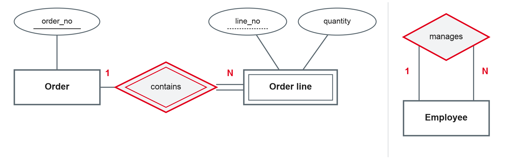
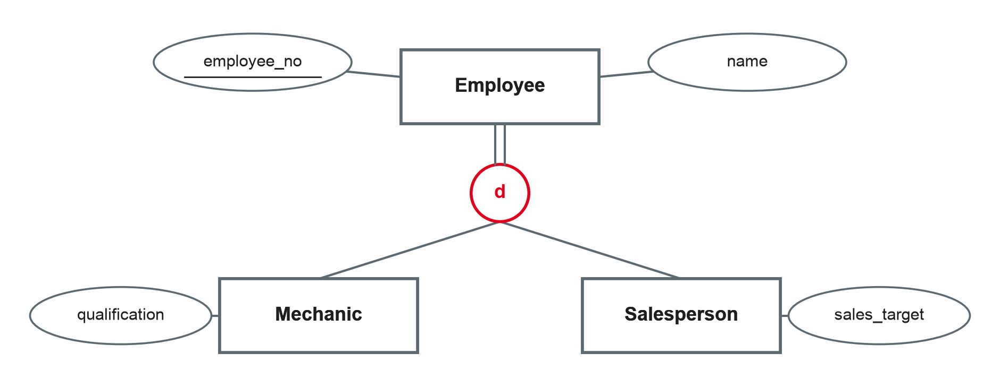

Data Management
Weak entity types · recursive relationships · generalisation and specialisation · modelling pitfalls · design project
DHBW · Digital Business Management (Business IT) · Semester 2
Today's concepts answer exactly these questions.
Entities that depend on others for their identity

Own illustration based on Chen (1976) and Elmasri and Navathe (2016).
Should these be modelled as weak entity types? Name the owner and the partial key.
M:N, recursive and ternary
If an attribute only makes sense for a pair of entities, it belongs to the relationship.
Based on Elmasri and Navathe (2016).
Read it with the roles: "one employee in the role manager manages N employees in the role staff member."
Based on Elmasri and Navathe (2016).
Based on Elmasri and Navathe (2016).
Superclasses and subclasses

Own illustration based on Elmasri and Navathe (2016).
| Meaning | Example | |
|---|---|---|
| Disjoint (d) | An entity belongs to at most one subclass | An employee is mechanic or salesperson |
| Overlapping (o) | An entity can belong to several subclasses | A person is student and employee of the university |
| Total | Every superclass entity belongs to a subclass (double line) | Every employee is mechanic or salesperson |
| Partial | Some superclass entities belong to no subclass | Some employees have no special role |
Based on Elmasri and Navathe (2016).
What often goes wrong
Own summary based on Staud (2005) and Elmasri and Navathe (2016).
Extend your model from session 3 (Chen notation):
Your own database, from model to data
The design project is part of the module assessment (combined with the written exam). Details and grading criteria follow in the project brief.
| Milestone | Content | After session |
|---|---|---|
| 1 · ER model | Case description, ER model with attributes, keys and cardinalities | 6 |
| 2 · Relational schema | Mapped and normalised schema | 7 |
| 3 · Database and queries | SQLite database with constraints; business questions answered in SQL | 12 |
| 4 · Data loading and quality | Real or open data cleaned and loaded with Python | 16 |
| 5 · Analytics extension | Star schema for one business process | 17 |
| Final presentation | Design decisions, demo, lessons learned | 20 |
Good cases
Clear business with several related things: a sports club, a coworking space, a food delivery service, a small hotel, a student housing office.
Your company?
A process you know from your training company — but only simplified and anonymised, without confidential data.
Check your case
At least 6–8 entity types, one M:N relationship, one specialisation, data you can realistically obtain or generate.
Preparation: finish the first version of your team's ER model — we will map it to tables in session 5.